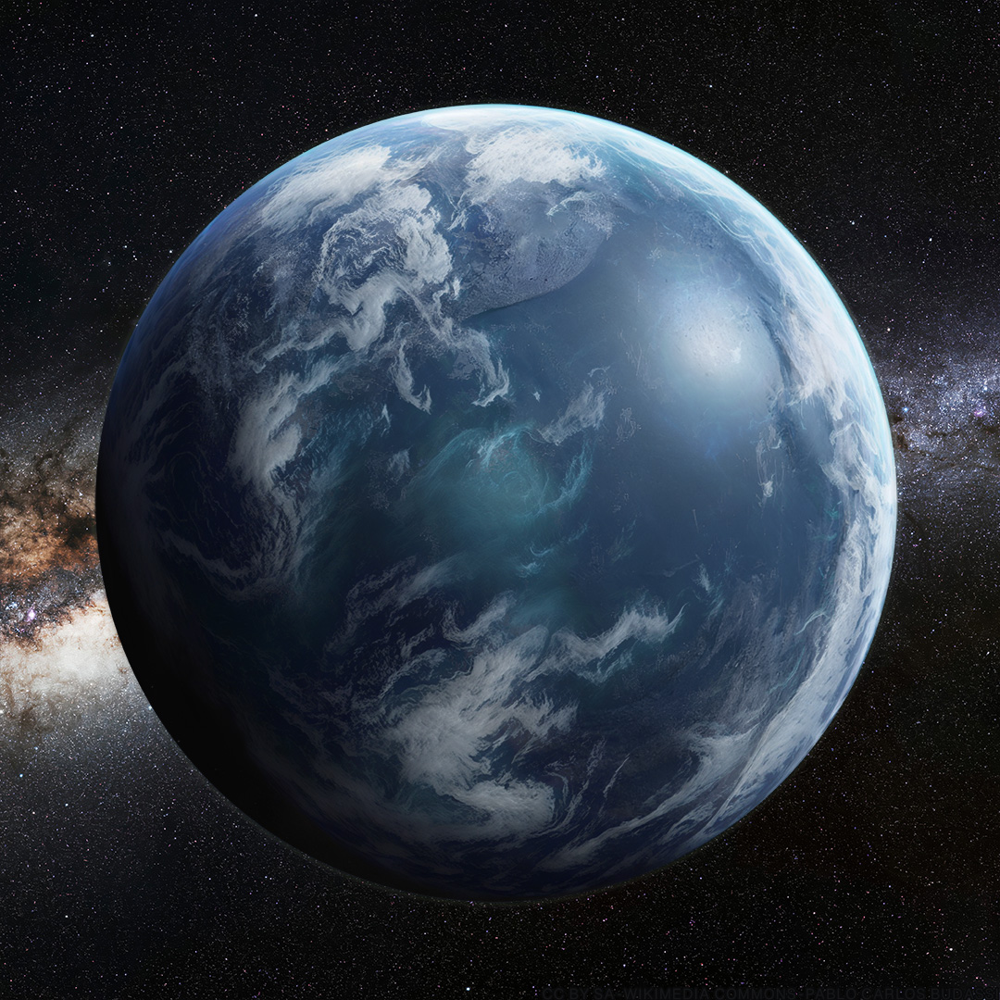
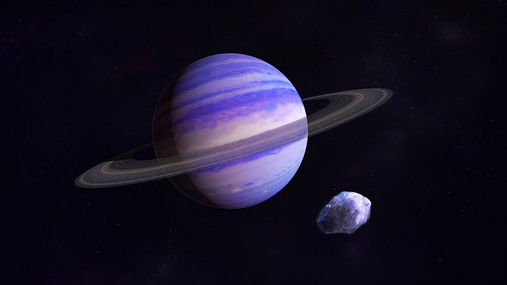
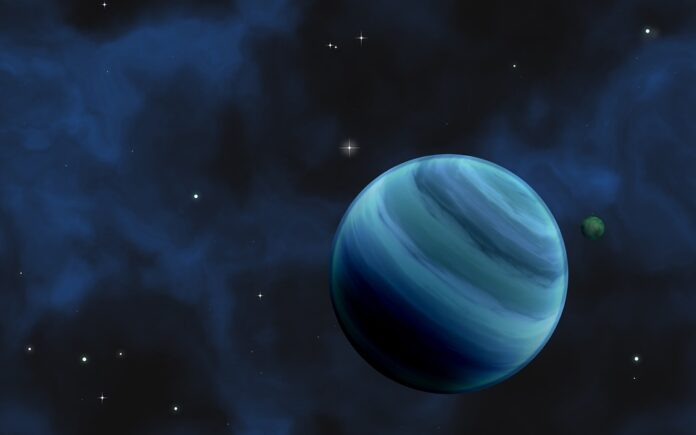
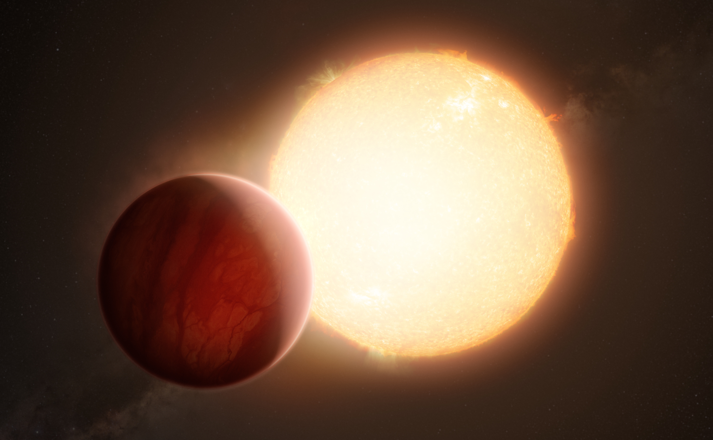
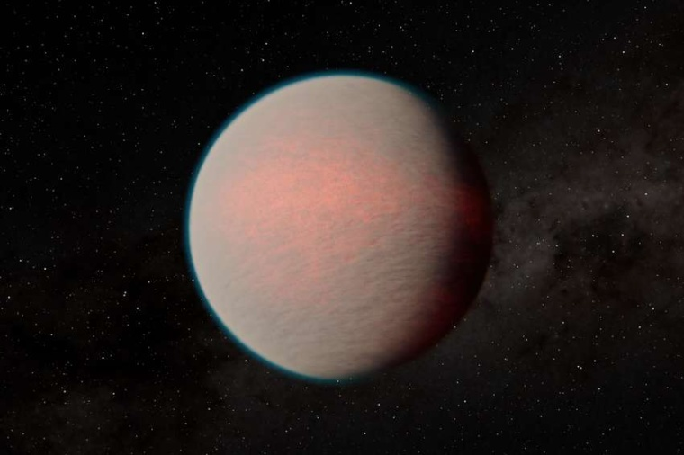
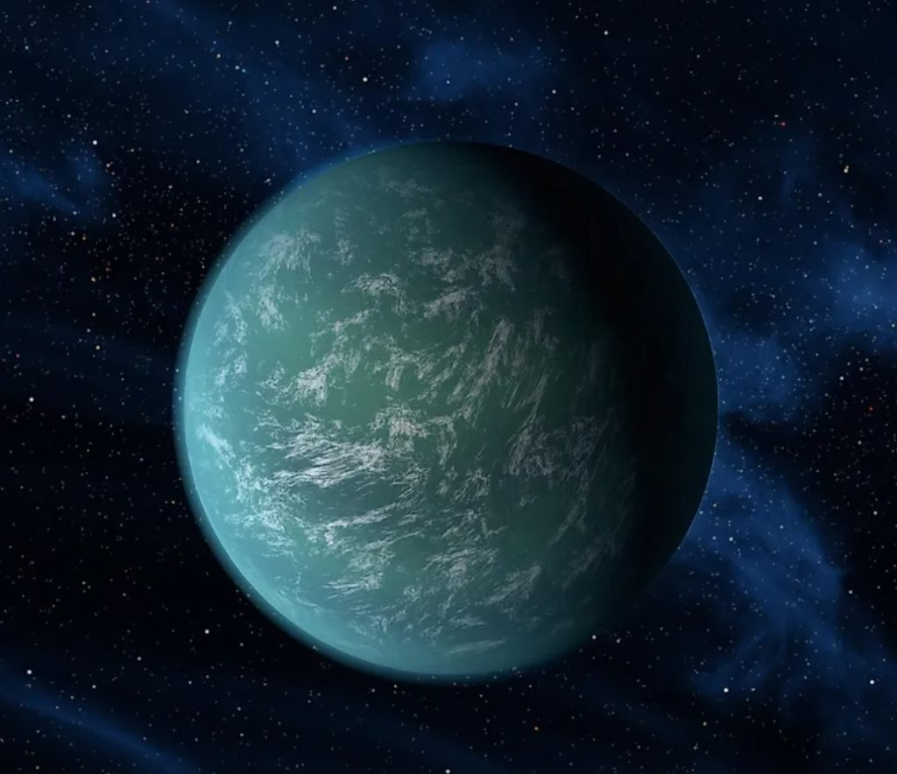
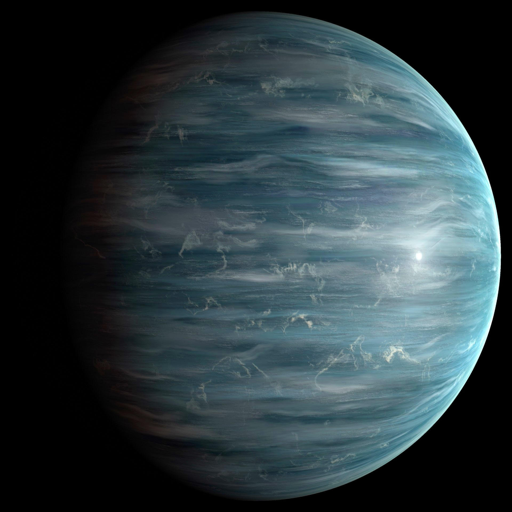
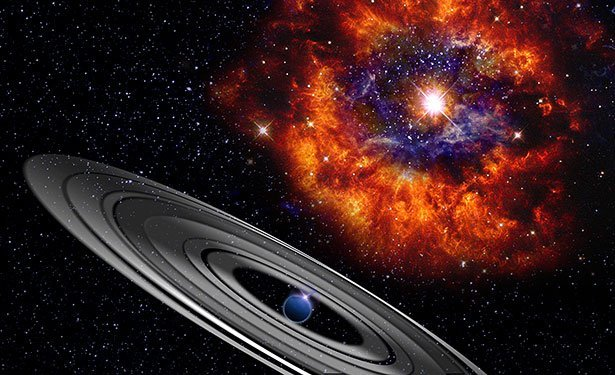
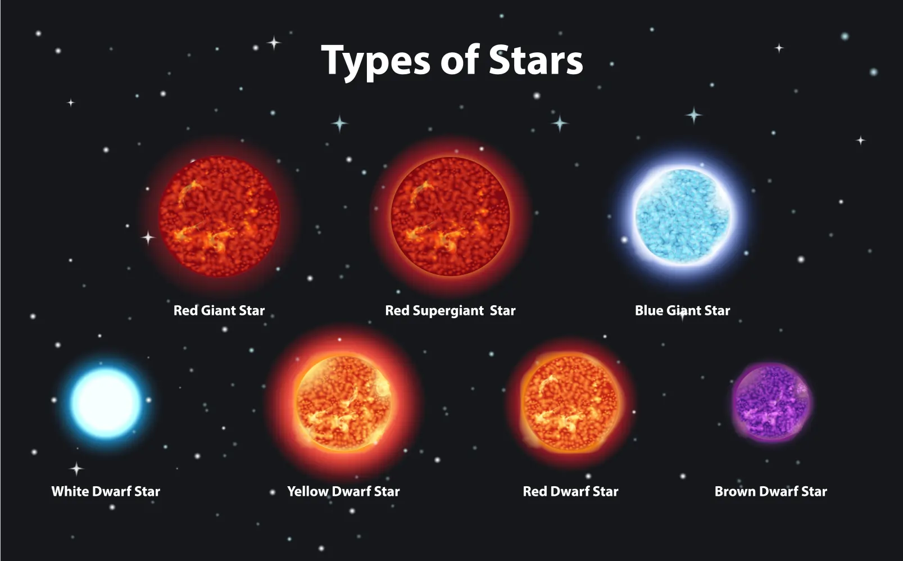
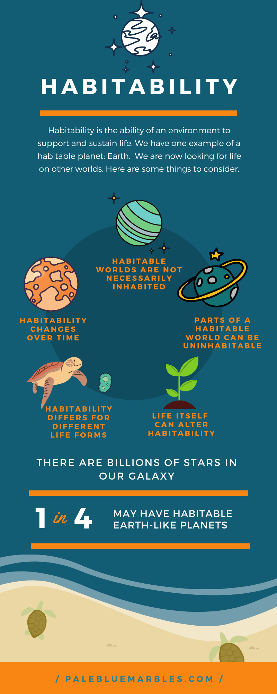

🌍 Life Worlds
Exoplanets, habitability, water, temperature, atmospheres, and star types.

Water Worlds
Planets covered entirely by global oceans.
Water worlds are planets with deep global oceans and little or no land.
They may contain more water than Earth by factors of 10–100.
• Global oceans hundreds of kilometers deep
• Possible underwater continents
• Thick atmospheres rich in water vapor
• Potential for life in deep oceans

Ocean Exoplanet
A blue world rich in water and clouds.
Some exoplanets show signatures of water vapor and thick cloud layers.
• Blue color from water vapor
• Thick cloud systems
• Possible warm oceans
• Stable climates around calm stars

Water-Rich Planet
A world dominated by oceans and misty atmosphere.
This type of exoplanet may have global oceans and thick misty atmospheres.
• Water vapor clouds
• Warm ocean surfaces
• Possible underwater life

Close‑Orbit Exoplanet
Extreme heat and intense radiation.
Close‑orbit exoplanets orbit extremely near their stars, often completing a year in hours or days.
• Temperatures > 1,000°C
• Atmospheres stripped by radiation
• Tidally locked (one side always day)
• Violent storms and winds

Thermal Worlds
Planets with thick, heat‑trapping atmospheres.
These worlds have dense atmospheres that trap heat, similar to Venus but often more extreme.
• Thick greenhouse atmospheres
• High surface pressure
• Thermal glow from heat retention
• Possible volcanic activity

Temperature & Atmospheres
Climate control and habitability.
Temperature determines whether water can exist as liquid.
• Ideal range: −20°C to +50°C
• Too hot → oceans evaporate
• Too cold → oceans freeze
• Atmospheres regulate heat

Gas & Ice Giants
Massive planets with thick atmospheres.
Gas giants and ice giants dominate many exoplanet systems.
• Hydrogen, helium, methane
• Extreme winds
• Deep cloud layers
• Possible rocky cores

Ringed Alien Planet
Exotic worlds with massive ring systems.
Some exoplanets may have rings far larger than Saturn’s.
• Rings made of ice, dust, rock
• Moons sculpt ring shapes
• Possible habitable moons

Star Types
Stars determine planetary habitability.
Different stars create different environments for planets.
• G‑type (Sun‑like)
• K‑type (cool, long‑lived)
• M‑type (flares)
• F‑type (short lifetimes)
• O/B‑type (too hot)

Habitability
Conditions required for life to exist.
Habitability is the ability of a world to support life.
• Liquid water
• Stable climate
• Atmosphere
• Magnetic field
• Distance from star